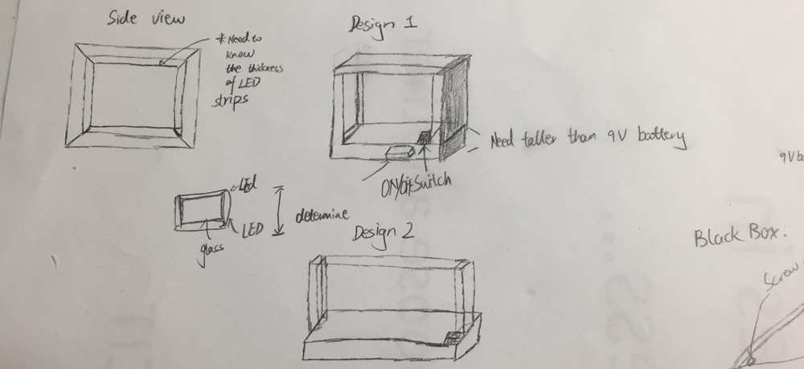

Engraved LED Plate
Background
2017 is my parent’s 30th wedding anniversary and I had been thinking to use what I have learned to hand make
a gift to them. I was exploring my college campus one night and ran into a great gift idea - an engraved glass
with LEDs embedded around some wood frames.
Normally, light would shine through the piece of glass. But once
the glass is engraved, the engraved region would trap lights and reflect light back, causing the glowing effect.
Then boom, I was set to make one to them during spring break.
Design and Development

I did some brainstormings, thought of and drew out two different designs. Then I decided to go with design 2 because
it used fewer materials and seemed to render better at my mind.
(I could have modeled it in Solidworks before making the decision.)
To make this gift, there were two parts. The first and most important part was making the engraved plate. I first created the engraved design in Adobe Illustrator. The design had a big heart. On top of the heart were words that stated my parent’s names and their 30th wedding anniversary. Inside the heart was the chinese character 囍, a word that is commonly used in wedding celebration and good wishes. Once the engraved design was made, I printed out the “vertical flipped” version of the design on paper and taped it on a piece of glass obtained from a glass store in Brooklyn. Then I used the Dremel Tool with engraving bit to engrave directly through the paper onto the glass by following the printed out. (Note that the “vertical flipped” version of the design was printed out so I could engrave the back side of the design on glass and the design would look smooth when viewing on the front side. I had tested out various methods for hand engraving and this is by far the most efficient and most effective method I found, call it Xitang's Engraving Method if you would like)
The second part was making the wood frame that housed the glass plate. I first made a pencil mark on some woods based on the length of the piece of glass. Then I jigsawed the woods out and wood glued them together to make the frame. Next I wrapped around the frame with red LED strips and connected them to a 9V battery with a on/off switch in between. Lastly, I inserted the engraved glass plate onto the wood frame and also got the electronics to be housed in the bottom. The gift was completed.
Result and Reflection
I did my first year of college in business and wasn't exposed to engineering until sophomore year. This was the first product project I ever made in my life. My mom was very happy to receive this gift, so was I very excited to create something meaningful to people I love and care very much about. The documentation of this project wasn't as extensive as some of my other project because it was my first project. But it really set the stage for all my future projects and taught me to better document my works and design/thought process.